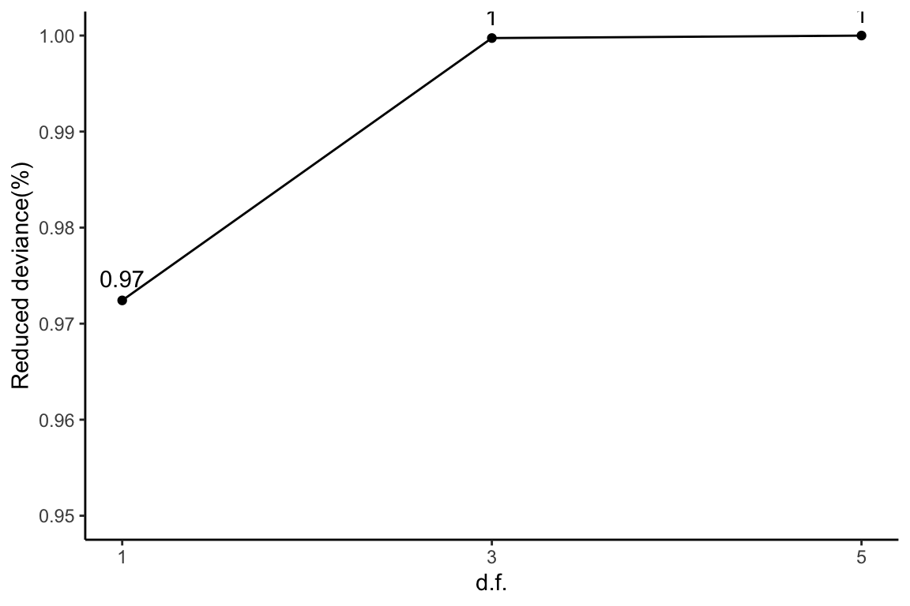
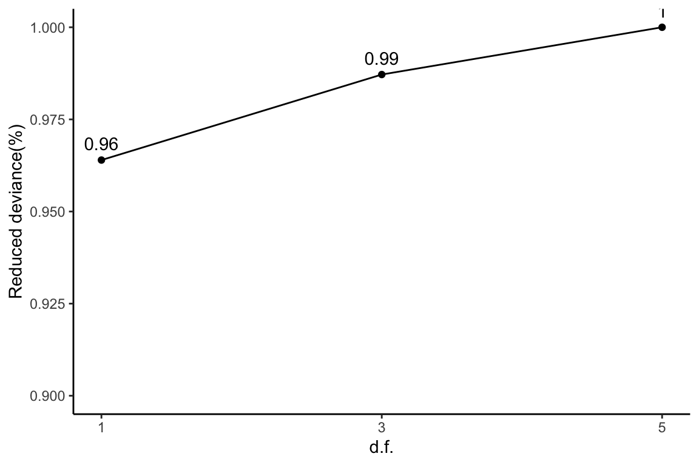
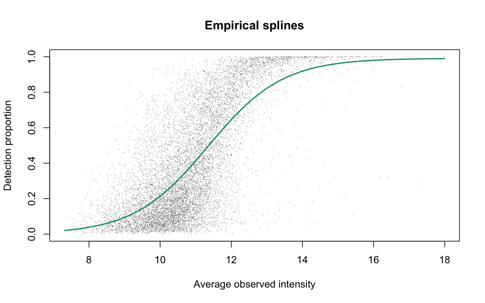
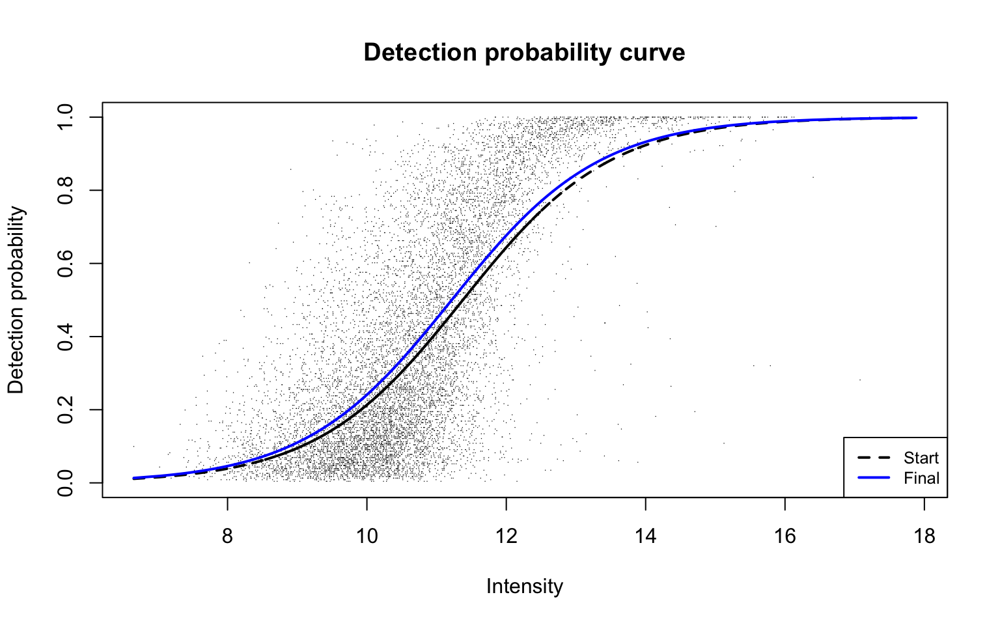
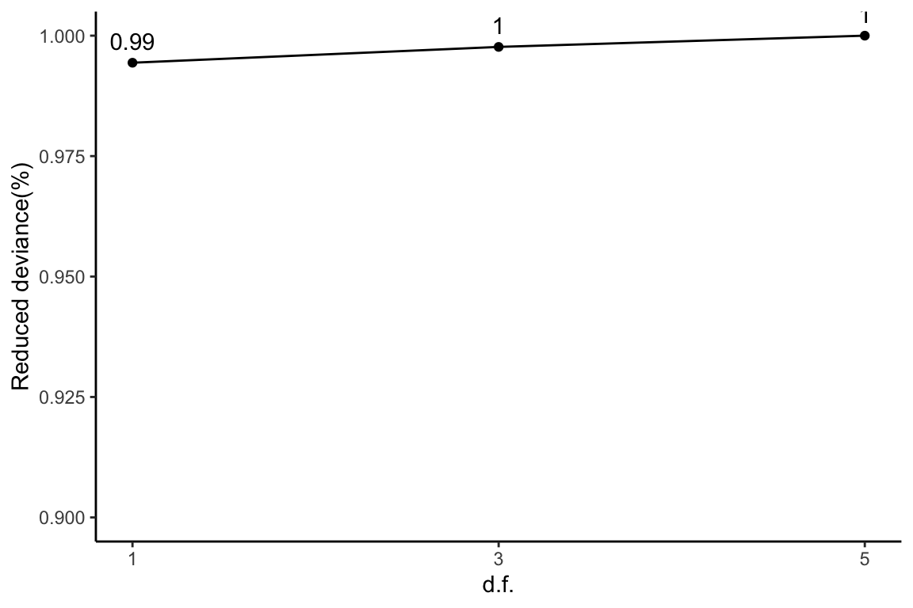

Main results and figures
Mengbo Li
Bioinformatics Division, WEHIprotDP.RmdOverview
In this file, we provide the source code to the case studies discussed in the manuscript. For each dataset, we first empirically examine the relationship between missingness (detection) and intensity using observed data. Detection proportions are modelled by the logistic regression model fitted to the average observed intensities on the precursor-level. The design matrix is specified as the basis matrix generated on the average observed intensities with 1, 3 or 5 degrees of freedom. We show that the detection proportion is approximately linear in average observed intensity at the logit scale. To allow for missingness completely at random (MCAR) in data, we also propose a capped-logit-linear model for detection proportions where the probability of detection is capped at a value smaller than or equal to 1 for all observations in data. Lastly, the missingness mechanism is formally modelled by the detection probability curve (DPC), which describes the probability of an observation being detected given its underlying intensity. The above analyses are applied to each of the four datasets mentioned in the main text on the precursor-level. The same analyses are repeated with the four example datasets on the protein-level in the Supplementary tab of this vignette.
Dataset A: Hybrid proteome data
Hybrid proteome samples were generated by mixing human, yeast and E.coli lysates in different ratios and analysed by SWATH-MS (Navarro et al. 2016). The original dataset (TripleTOF6600; 64-variable-window acquisition) were re-processed by DIA-NN in Demichev et al. (2020). Details of the experimental procedures and data processing steps are available in Navarro et al. (2016) and Demichev et al. (2020). The dataset was downloaded from the OSF repository at https://doi.org/10.17605/OSF.IO/6G3UX.
Data overview
We focus on the triplicates of Sample A. A log2-transformation was applied to the precursor-level intensities, before which intensity values less than 1 were already filtered out.
data("datasetA")
dat <- log2(datasetA$prec)
dim(dat)
[1] 34689 3The dataset has a relatively small amount of missing values with an overall proportion of missing data of
sum(is.na(dat))/length(dat)
[1] 0.08632Empirical logistic splines for detected proportions
Natural cubic splines generated on average observed intensities are fitted on detection proportions with 1, 3 and 5 degrees of freedom:
dfList <- seq(1, 5, 2)
lineColours <- RColorBrewer::brewer.pal(3, "Dark2")
nuis <- getNuisance(dat)
allFits <- list()
for (df in dfList) {
params0 <- logitSplines_start(dp = nuis$dp, mu = nuis$mu_obs,
wt = nuis$wt, df = df)
fit <- logit_ztbinom(dp = nuis$dp, X = params0$X, wt = nuis$wt,
beta0 = params0$betas_start)
fit$binomEstimate <- params0
allFits[[(df + 1)/2]] <- fit
if (df == 1)
plotEmpSplines(nuis, X = params0$X, fit$params, ylim = c(0,
1.04), lineCol = lineColours[(df + 1)/2])
if (df > 1)
plotEmpSplines(nuis, X = params0$X, fit$params, ylim = c(0,
1.04), lineCol = lineColours[(df + 1)/2], newPlot = FALSE)
}
legend("bottomright", legend = paste("df = ", dfList), col = lineColours,
lwd = 2, lty = 1, cex = 0.8)This plot corresponds to Panel (a) of Figure 1 in the manuscript.
Empirical logistic splines assuming the binomial distribution
We have assumed the number of detected samples in each precursor to follow the zero-truncated binomial distribution in the previous section. As a comparison, logistic regression splines are next fitted assuming the binomial distribution.
par(mfrow = c(1, 2))
# Plot for precursors of low intensity
low <- nuis$mu_obs < 4
nuis_low <- nuis
nuis_low$mu_obs <- nuis_low$mu_obs[low]
nuis_low$dp <- nuis_low$dp[low]
for (df in dfList) {
params0 <- allFits[[(df + 1)/2]]$binomEstimate
fit <- allFits[[(df + 1)/2]]
if (df == 1)
plotEmpSplines(nuis_low, X = params0$X[low, ], params0$betas_start,
xlim = c(0, 4), ylim = c(-2, 2), logit = TRUE, lineCol = lineColours[(df +
1)/2], lty = "dashed")
plotEmpSplines(nuis_low, X = params0$X[low, ], fit$params,
ylim = c(-2, 2), logit = TRUE, lineCol = lineColours[(df +
1)/2], newPlot = FALSE)
if (df > 1)
plotEmpSplines(nuis_low, X = params0$X[low, ], params0$betas_start,
ylim = c(-2, 2), logit = TRUE, lineCol = lineColours[(df +
1)/2], lty = "dashed", newPlot = FALSE)
plotEmpSplines(nuis_low, X = params0$X[low, ], fit$params,
logit = TRUE, lineCol = lineColours[(df + 1)/2], ylim = c(-2,
2), newPlot = FALSE)
}
legend("topleft", legend = c(paste("df = ", dfList), "Binom",
"ZB"), col = c(lineColours, "black", "black"), lwd = 2, lty = c(1,
1, 1, 2, 1), cex = 0.4)
for (df in dfList) {
params0 <- allFits[[(df + 1)/2]]$binomEstimate
fit <- allFits[[(df + 1)/2]]
if (df == 1)
plotEmpSplines(nuis_low, X = params0$X[low, ], params0$betas_start,
xlim = c(0, 4), ylim = c(0, 1.04), lineCol = lineColours[(df +
1)/2], lty = "dashed")
plotEmpSplines(nuis_low, X = params0$X[low, ], fit$params,
ylim = c(0, 1.04), lineCol = lineColours[(df + 1)/2],
newPlot = FALSE)
if (df > 1)
plotEmpSplines(nuis_low, X = params0$X[low, ], params0$betas_start,
ylim = c(0, 1.04), lineCol = lineColours[(df + 1)/2],
lty = "dashed", newPlot = FALSE)
plotEmpSplines(nuis_low, X = params0$X[low, ], fit$params,
ylim = c(0, 1.04), lineCol = lineColours[(df + 1)/2],
newPlot = FALSE)
}
legend("bottomright", legend = c(paste("df = ", dfList), "Binom",
"ZB"), col = c(lineColours, "black", "black"), lwd = 2, lty = c(1,
1, 1, 2, 1), cex = 0.4)
The above plots correspond to Figure 2 of the manuscript.
Reduced deviance compared to an intercept model
The amount of reduced deviance by each logistic spline compared to an intercept model is calculated. The total amount of reduced deviance is calculated as the difference between the largest model with 5 degrees of freedom and the intercept model. As more degrees of freedom is freed up, reduced deviance decreases. The percentage of reduced deviance out of total reduced deviance is calculated for each fitted spline.
params0 <- logitSplines_start(dp = nuis$dp, mu = nuis$mu_obs,
wt = nuis$wt, df = 0)
baselineFit <- logit_ztbinom(dp = nuis$dp, X = params0$X, wt = nuis$wt,
beta0 = params0$betas_start)
baselineDev <- 2 * min(baselineFit$info[, "neg.LL"])
devs <- data.frame(df = c(0, dfList), dev = c(baselineDev, sapply(allFits,
function(i) 2 * min(i$info[, "neg.LL"])))) %>%
mutate(dev.decre = baselineDev - dev, percDevReduced = dev.decre/max(dev.decre))
ggplot(slice(devs, 2:4), aes(x = df, y = percDevReduced)) + geom_point() +
geom_line() + geom_text(aes(label = signif(percDevReduced,
2)), vjust = -0.8) + scale_x_continuous(breaks = c(1, 3,
5)) + labs(x = "d.f.", y = "Reduced deviance(%)") + ylim(0.95,
1) + theme_classic()
This plot corresponds to the green curve in Figure 3 of the manuscript.
Empirical logit-linear curve with capped probabilities
Next we allow missingness completely at random (MCAR) to present in data. The probability of detection for any observation in a dataset is capped at a value \(\alpha \in (0, 1]\). In other words, we allow a proportion of (1-\(\alpha\)) observations in data to be missing completely at random.
params0 <- logitSplines_start(dp = nuis$dp, mu = nuis$mu_obs,
wt = nuis$wt, df = 1)
cappedLinear <- cappedLogit_ztbinom(dp = nuis$dp, X = params0$X,
wt = nuis$wt, alpha0 = 0.9, beta0 = params0$betas_start,
trace = FALSE)
round(cappedLinear$params, 2)
alpha b0 b1
1.00 -1.56 15.26
plotEmpSplines(nuis, X = params0$X, cappedLinear$params, capped = TRUE,
lineCol = lineColours[1], ylim = c(0, 1.04))
The estimated value of \(\alpha\) is approximately 1. This plot corresponds to Panel (a) in Figure 4 of the manuscript.

Dataset B: Cell cycle proteomes
Single cell proteomes were profiled by the true single-cell-derived proteomics (T-SCP) pipeline as described in Brunner et al. (2022). Processed data were downloaded from the ProteomeXchange Consortium via the PRIDE partner repository with the dataset identifier PXD024043. Intensity values of zero were filtered.
Data summary
We first apply a log2-transformation on the precursor-level intensities:
data("datasetB")
dat <- log2(datasetB$prec)
dim(dat)
[1] 10754 231The overall proportion of missing data is
sum(is.na(dat))/length(dat)
[1] 0.6039The same analyses as those of Dataset A are also performed on Dataset B on the precursor level. For simplicity, we created a wrapper function to collect all results for a log2-transformed dataset:
diapasefRes <- gatherResults(dat)Empirical logistic splines for detected proportions
for (i in 1:length(dfList)) {
if (i == 1)
plotEmpSplines(diapasefRes$nuis, X = diapasefRes$splineFits_params0[[i]]$X,
diapasefRes$splineFits[[i]]$params, point.cex = 0.1,
lineCol = lineColours[i], add.jitter = FALSE)
if (i > 1)
plotEmpSplines(diapasefRes$nuis, X = diapasefRes$splineFits_params0[[i]]$X,
diapasefRes$splineFits[[i]]$params, lineCol = lineColours[i],
newPlot = FALSE)
}
legend("bottomright", legend = paste("df = ", dfList), col = lineColours,
lwd = 2, lty = 1, cex = 0.8)
This plot corresponds to Panel (b) in Figure 1 of the manuscript.
Reduced deviance compared to an intercept model
ggplot(slice(diapasefRes$devs, 2:4), aes(x = df, y = percDevReduced)) +
geom_point() + geom_line() + geom_text(aes(label = signif(percDevReduced,
2)), vjust = -0.8) + scale_x_continuous(breaks = c(1, 3,
5)) + labs(x = "d.f.", y = "Reduced deviance(%)") + ylim(0.9,
1) + theme_classic()
This plot corresponds to the orange curve in Figure 3 of the manuscript.
Empirical logit-linear curve with capped probabilities
plotEmpSplines(diapasefRes$nuis, X = diapasefRes$splineFits_params0[[1]]$X,
diapasefRes$cappedLinearFit$params, capped = TRUE, lineCol = lineColours[1],
add.jitter = FALSE, point.cex = 0.1)
Parameters of the fitted curve are as follows:
round(diapasefRes$cappedLinearFit$params, 2)
alpha b0 b1
0.99 -3.86 12.74 This plot corresponds to Panel (b) in Figure 4 of the manuscript.
Detection probability curve assuming normal observed intensities
plotDPC(diapasefRes$nuis, diapasefRes$dpcFit, add.jitter = FALSE,
point.cex = 0.1)
This plot corresponds to Panel (b) in Figure 5 of the manuscript with estimated parameters
round(diapasefRes$dpcFit$beta, 2)
[1] -10.31 0.92Dataset C: HepG2 technical replicate data
Technical replicates of HepG2 cell lysates were analysed in Sinitcyn et al. (2021). MS data were acquired by DIA and analysed by MaxDIA, a DIA data processing software within the MaxQuant environment (Sinitcyn et al. 2021). We downloaded processed data from the ProteomeXchange Consortium via the PRIDE partner repository with the dataset identifier PXD022589.
Data summary
We start the workflow again by applying log2-transformation to the precursor-level intensities.
data("datasetC")
dat <- log2(datasetC$prec)
dim(dat)
[1] 62515 27The overall proportion of missing data is equal to
sum(is.na(dat))/length(dat)
[1] 0.3284Empirical logistic splines for detected proportions
maxdiaRes <- gatherResults(dat)
for (i in 1:length(dfList)) {
if (i == 1)
plotEmpSplines(maxdiaRes$nuis, X = maxdiaRes$splineFits_params0[[i]]$X,
maxdiaRes$splineFits[[i]]$params, point.cex = 0.1,
lineCol = lineColours[i], jitter.amount = 1/ncol(dat)/2)
if (i > 1)
plotEmpSplines(maxdiaRes$nuis, X = maxdiaRes$splineFits_params0[[i]]$X,
maxdiaRes$splineFits[[i]]$params, lineCol = lineColours[i],
newPlot = FALSE)
}
legend("bottomright", legend = paste("df = ", dfList), col = lineColours,
lwd = 2, lty = 1, cex = 0.8)
This plot is Panel (c) in Figure 1 in the manuscript.
Reduced deviance compared to an intercept model
ggplot(slice(maxdiaRes$devs, 2:4), aes(x = df, y = percDevReduced)) +
geom_point() + geom_line() + geom_text(aes(label = signif(percDevReduced,
2)), vjust = -0.8) + scale_x_continuous(breaks = c(1, 3,
5)) + labs(x = "d.f.", y = "Reduced deviance(%)") + ylim(0.9,
1) + theme_classic()
This plot corresponds to the blue curve in Figure 3 of the manuscript.
Empirical logit-linear curve with capped probabilities
plotEmpSplines(maxdiaRes$nuis, X = maxdiaRes$splineFits_params0[[1]]$X,
maxdiaRes$cappedLinearFit$params, capped = TRUE, lineCol = lineColours[1],
jitter.amount = 1/ncol(dat)/2, point.cex = 0.1)This plot is Panel (c) in Figure 4 in the manuscript with estimated parameters being
round(maxdiaRes$cappedLinearFit$params, 2)
alpha b0 b1
0.97 -2.49 10.75 Dataset D: Human blood plasma proteome
Human blood plasma samples from acute inflammation patients were analysed in Prianichnikov et al. (2020). MS data were acquired by DDA and analysed by MaxQuant. Processed data are available from the ProteomeXchange Consortium via the PRIDE partner repository with the dataset identifier PXD014777.
Data summary
Precursor-level intensity values are first log2-transformed.
data("datasetD")
dat <- log2(datasetD$prec)
dim(dat)
[1] 2384 212The overall proportion of missing data is equal to
sum(is.na(dat))/length(dat)
[1] 0.5687Empirical logistic splines for detected proportions
ddaPlasmaRes <- gatherResults(dat)
for (i in 1:length(dfList)) {
if (i == 1)
plotEmpSplines(ddaPlasmaRes$nuis, X = ddaPlasmaRes$splineFits_params0[[i]]$X,
ddaPlasmaRes$splineFits[[i]]$params, lineCol = lineColours[i],
add.jitter = FALSE)
if (i > 1)
plotEmpSplines(ddaPlasmaRes$nuis, X = ddaPlasmaRes$splineFits_params0[[i]]$X,
ddaPlasmaRes$splineFits[[i]]$params, lineCol = lineColours[i],
newPlot = FALSE)
}
legend("bottomright", legend = paste("df = ", dfList), col = lineColours,
lwd = 2, lty = 1)This plot is Panel (d) in Figure 1 in the main text.
Reduced deviance compared to an intercept model
ggplot(slice(ddaPlasmaRes$devs, 2:4), aes(x = df, y = percDevReduced)) +
geom_point() + geom_line() + geom_text(aes(label = signif(percDevReduced,
2)), vjust = -0.8) + scale_x_continuous(breaks = c(1, 3,
5)) + labs(x = "d.f.", y = "Reduced deviance(%)") + ylim(0.9,
1) + theme_classic()This plot corresponds to the pink curve in Figure 3 from the main text.
Empirical logit-linear curve with capped probabilities
plotEmpSplines(ddaPlasmaRes$nuis, X = ddaPlasmaRes$splineFits_params0[[1]]$X,
ddaPlasmaRes$cappedLinearFit$params, capped = TRUE, lineCol = lineColours[1],
add.jitter = FALSE)This plot is Panel (d) in Figure 4 of the manuscript, with estimated parameters being
round(ddaPlasmaRes$cappedLinearFit$params, 2)
alpha b0 b1
0.99 -3.78 12.64 Detection probability curve assuming normal observed intensities
plotDPC(ddaPlasmaRes$nuis, ddaPlasmaRes$dpcFit, add.jitter = FALSE)This plot is Panel (d) in Figure 5 of the manuscript, with estimated parameters being
round(ddaPlasmaRes$dpcFit$beta, 2)
[1] -12.44 0.84References
Session information
sessionInfo()
R version 4.2.0 (2022-04-22)
Platform: x86_64-apple-darwin17.0 (64-bit)
Running under: macOS Big Sur/Monterey 10.16
Matrix products: default
BLAS: /Library/Frameworks/R.framework/Versions/4.2/Resources/lib/libRblas.0.dylib
LAPACK: /Library/Frameworks/R.framework/Versions/4.2/Resources/lib/libRlapack.dylib
locale:
[1] en_AU.UTF-8/en_AU.UTF-8/en_AU.UTF-8/C/en_AU.UTF-8/en_AU.UTF-8
attached base packages:
[1] stats graphics grDevices utils datasets methods base
other attached packages:
[1] protDP_1.0.0 forcats_0.5.1 stringr_1.4.0 dplyr_1.0.9 purrr_0.3.4 readr_2.1.2
[7] tidyr_1.2.0 tibble_3.1.7 ggplot2_3.3.6 tidyverse_1.3.1
loaded via a namespace (and not attached):
[1] lubridate_1.8.0 assertthat_0.2.1 rprojroot_2.0.3 digest_0.6.29 utf8_1.2.2
[6] R6_2.5.1 cellranger_1.1.0 backports_1.4.1 reprex_2.0.1 evaluate_0.15
[11] highr_0.9 httr_1.4.3 pillar_1.7.0 rlang_1.0.2 readxl_1.4.0
[16] rstudioapi_0.13 jquerylib_0.1.4 rmarkdown_2.14 pkgdown_2.0.3 labeling_0.4.2
[21] splines_4.2.0 textshaping_0.3.6 desc_1.4.1 munsell_0.5.0 broom_0.8.0
[26] compiler_4.2.0 modelr_0.1.8 xfun_0.31 pkgconfig_2.0.3 systemfonts_1.0.4
[31] htmltools_0.5.2 tidyselect_1.1.2 fansi_1.0.3 crayon_1.5.1 tzdb_0.3.0
[36] dbplyr_2.2.0 withr_2.5.0 grid_4.2.0 jsonlite_1.8.0 gtable_0.3.0
[41] lifecycle_1.0.1 DBI_1.1.2 magrittr_2.0.3 formatR_1.12 scales_1.2.0
[46] cli_3.3.0 stringi_1.7.6 cachem_1.0.6 farver_2.1.0 fs_1.5.2
[51] limma_3.52.1 xml2_1.3.3 bslib_0.3.1 ellipsis_0.3.2 ragg_1.2.2
[56] generics_0.1.2 vctrs_0.4.1 RColorBrewer_1.1-3 tools_4.2.0 glue_1.6.2
[61] hms_1.1.1 fastmap_1.1.0 yaml_2.3.5 colorspace_2.0-3 rvest_1.0.2
[66] memoise_2.0.1 knitr_1.39 haven_2.5.0 sass_0.4.1